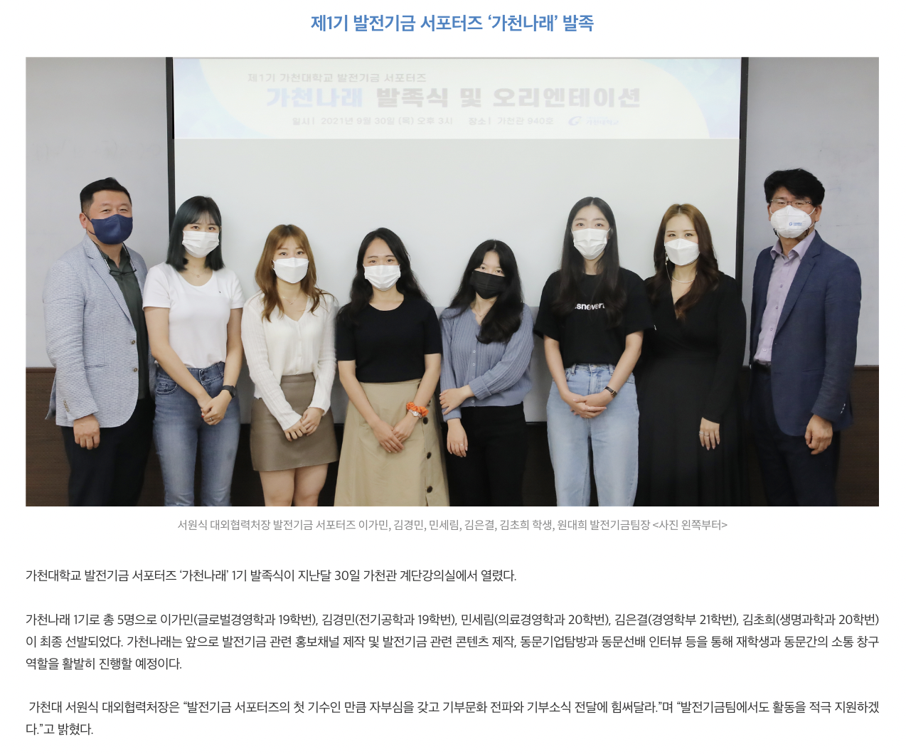
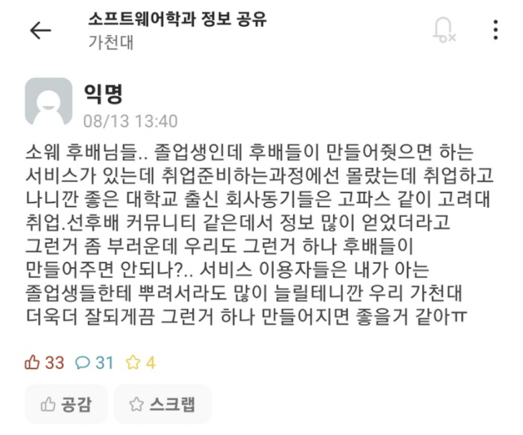
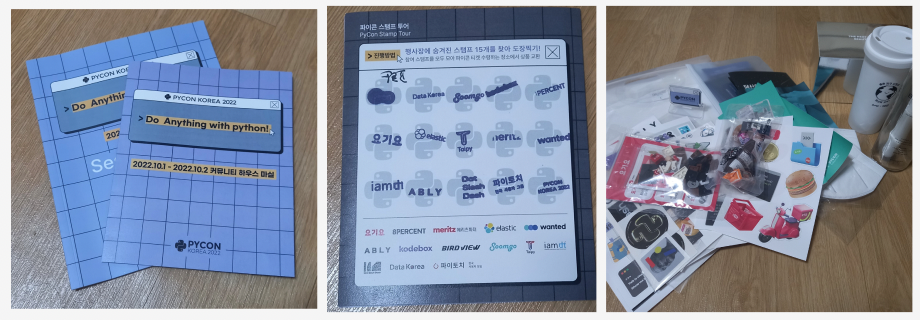

너나들이, 그게 뭔데?
너나들이는 대학교 선후배 커뮤니티 앱입니다.
학교, 졸업생, 재학생 입장에서 선후배 관계에 대해 이야기해볼까 해요.
먼저 학교.

저는 취업서포터즈, 발전기금 서포터즈에서 활동한 경험이 있습니다.
두 활동을 하면서 느낀 점은 학교에서 선후배 관계를 돈독히 하려고 노력한다는 것입니다.
하지만 저는 학교의 노력에 비해 실질적으로 재학생, 졸업생 모두가 납득할 정도의 소통 창구가 마련되어 있지 않다고 봅니다.
다음으로 졸업생.

졸업생의 입장을 한 번 살펴볼까요? 저는 가천대 IT 개발자 & 스타트업 경력개발방 모임에도 참가한 적이 있는데요. 여기서도 들은 이야기는 졸업생 분들도 재학생분들과 소통을 원한다는 점이었습니다. 그렇지만 마땅히 이야기 나눌 창구가 없다는 점을 아쉬워하셨어요.
마지막으로 재학생.

여러분이 느끼시기에는 어떠신가요?
아니면 이 질문을 하기 전에 선후배 커뮤니티의 필요성에 대해 의문이 생기시나요?
위 사진이 선후배 커뮤니티의 필요성에 대한 답이 되지 않을까 싶습니다.
선후배 커뮤니티는 취업에 있어서 꼭 필요한 존재라고 봅니다.
또한 취업에 국한되지 않고,
선후배 커뮤니티가 형성되면 우리 모두가 성장할 수 있는 데에 도움이 되는 공간이 될 것이라고 믿어요.
우리에게 꼭 필요한 선후배 커뮤니티
저와 함께 만들어요
눈이 반짝이는
개발자가 되기를
꿈꾸고 있어요
저는 PM으로서 이걸 약속하고 싶어요.
배포까지 책임지고 여러분에게 자랑스러운 포트폴리오를 만들어 드릴게요.
프론트엔드 개발자를 꿈꾸지만,
서버파트라구요?
저는 프론트엔드 개발자를 꿈꾸고 있지만 이번 UMC 3기에서는 서버 파트로 참여 중입니다. 비록 프론트엔드를 희망하지만, PM으로 활동을 하려면 저는 파트를 불문하고 전반적으로 파악하고 있어야 한다고 생각했어요. 그래서 맨땅의 헤딩으로 현재 서버 파트로 활동 중이랍니다.
개발 이야기 저랑 같이 해요
코딩을 시작한 지 그렇게 오래되지는 않지만, 개발 이야기를 참 좋아해요. 그래서 컨퍼런스 다니는 것도 좋아한답니다. 컨퍼런스를 비롯하여 개발 관련 정보들 공유할게요. 함께 해요.
여러분께 제가 어떤 사람으로 비칠지 모르겠지만 이번 UMC 3기 앱 런칭에서 진심으로 저와 뜻이 맞는 분을 만나고 싶답니다. 지금 이 글을 읽고 있는 당신과 '너나들이' 함께 하길 바랄게요:)